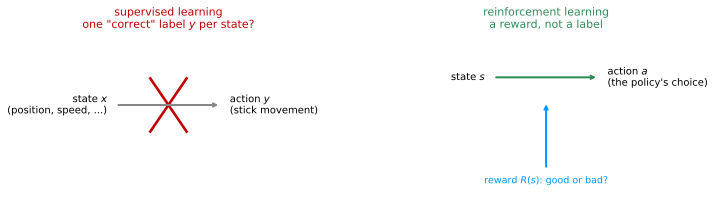
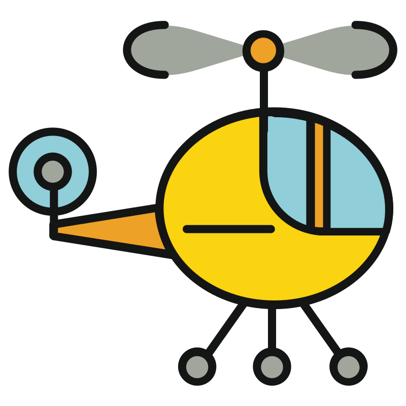

Reinforcement Learning
machine-learning
unsupervised-learning
The reinforcement learning problem, from the Mars rover example: states, actions, rewards, discounted return, policies, and the Markov decision process.
Unsupervised learning covered clustering, anomaly detection, and dimensionality reduction with PCA. Recommender systems then showed how collaborative filtering and content-based filtering predict what a user would rate an item they have not seen. This page turns to the last major topic of the course, reinforcement learning, a way of learning to make good decisions rather than good predictions, culminating later in a simulated moon lander.
What Is Reinforcement Learning?

Consider an autonomous helicopter, instrumented with an onboard computer, GPS, accelerometers, gyroscopes, and a magnetic compass, so it always knows its position and orientation quite accurately. Radio-controlled helicopters are flown with two joysticks, and ten times a second the pilot is given the helicopter’s position, orientation, and speed, and has to decide how to move the two control sticks to keep it balanced in the air. Radio-controlled helicopters are notoriously hard to fly, harder than quad-rotor drones. How would a program fly one automatically?
In reinforcement learning terms, the position, orientation, and speed of the helicopter is called its state \(s\), and the task is to find a function that maps the state to an action \(a\), meaning how far to push each control stick, so that the helicopter stays balanced and flying without crashing.
One tempting approach is supervised learning. Collect a set of states the helicopter has been in, have an expert pilot say what action \(y\) they would take in each one, and train a neural network to map states \(x\) to actions \(y\), exactly the input-output mapping seen throughout supervised learning. It turns out this does not work well for flying a helicopter. A helicopter moving through the air is often ambiguous about what the single best action is. Tilt a little to the left, or a lot? Increase thrust slightly, or a great deal? It is very difficult to build a dataset of states paired with one correct action, so for controlling a helicopter, and many other robots, supervised learning falls short and reinforcement learning is used instead.
The left panel is the supervised learning attempt from above, a state mapped straight to one “correct” action, crossed out because that correct action is rarely clear. The right panel is reinforcement learning instead, the state still leads to an action, but the only extra signal supplied is the reward \(R(s)\), a judgment of good or bad, not a specific instruction, and it is left to the algorithm to work out which actions earn good rewards.
Reward Function
A key input to reinforcement learning is the reward function, which tells the helicopter when it is doing well and when it is doing poorly, a bit like training a dog. A puppy cannot be shown much of anything directly. Instead, it is left to do its own thing, and whenever it does something good, it hears “good dog,” and whenever it does something bad, it hears “bad dog.” It then learns, on its own, to do more of the good-dog things and fewer of the bad-dog things.
Training a helicopter with reinforcement learning works the same way. Whenever it is flying well, that is “good helicopter,” and whenever it does something bad, like crashing, that is “bad helicopter,” and it is the algorithm’s job to figure out how to get more of the good outcomes and fewer of the bad ones. This is part of why reinforcement learning is so powerful. It only requires specifying what to do, through the reward, rather than how to do it, through a labeled action. Specifying a reward function instead of the ideal action gives far more flexibility in designing the system. Concretely, a helicopter might be given a reward of \(+1\) for every second it flies well, a negative reward for flying poorly, and a large negative reward, such as \(-1{,}000\), if it ever crashes, which incentivizes it to spend a lot of time flying well and to never crash.
The same good-dog, bad-dog idea has also been used to train a robotic dog to climb over obstacles, rewarded for making progress toward a goal on one side of the screen. Everything about how it places its feet to get over a given obstacle was worked out automatically, purely from the incentive to keep making progress, without anyone programming the leg motions directly.
Applications of Reinforcement Learning
Reinforcement learning has been successfully applied to a range of problems.
- Controlling robots, including helicopters flying stunts and legged robots climbing over obstacles.
- Factory optimization, rearranging how things move through a factory to maximize throughput and efficiency.
- Financial trading, such as efficient stock execution. If a trader needs to sell a million shares over the next several days, dumping them all on the market at once moves the price against them, so a policy has to decide how to sequence the trades over time to get the best overall price.
- Playing games, from checkers, chess, and the card game bridge, to go and a wide range of video games.
Reinforcement learning is not nearly as widely used as supervised learning yet, but it is used in these few applications today. The key idea in every one of them is the same. Instead of specifying the correct output \(y\) for every input, a reward function specifies when the system is doing well and when it is doing poorly, and it becomes the algorithm’s job to figure out, on its own, how to choose good actions.
Review Questions
1. Why does plain supervised learning tend to work poorly for a task like flying a helicopter?
TipAnswer
Supervised learning would need a dataset of states paired with the single correct action to take in each one, but for a helicopter moving through the air it is usually ambiguous what that one right action is, tilt a little or a lot, increase thrust a little or a lot. Building a clean dataset of states and ideal actions is very difficult, which is why reinforcement learning is used instead.
1. In reinforcement learning, what are the state \(s\) and the action \(a\) for the helicopter example?
TipAnswer
The state \(s\) is the position, orientation, and speed of the helicopter, everything the onboard sensors report. The action \(a\) is how far to move each of the two control sticks, the output the algorithm must decide on given the current state.
1. In the good-dog, bad-dog analogy, what does the reward function correspond to?
TipAnswer
The reward function is the “good dog” or “bad dog” feedback itself. It does not tell the learner exactly what to do, only whether the outcome of what it just did was good or bad, and it is left to the learner to figure out, from many rounds of this feedback, how to act so as to earn more “good” and less “bad.”
1. Why is specifying a reward function often more flexible than specifying the ideal action directly?
TipAnswer
A reward function only has to say what outcome is desirable, such as flying well or crashing, rather than dictating the exact correct action for every possible state. That is a much easier thing to specify by hand, and it leaves the algorithm free to discover, through trial and error, whatever sequence of actions actually earns the reward, even for behaviors nobody knows how to describe step by step, like a robot dog picking its footing over an obstacle.
1. You are using reinforcement learning to control a four-legged robot. The position of the robot would be its _____.
state
reward
return
action
TipAnswer
a. The position of the robot describes where it is right now, which is exactly what the state \(s\) captures. The action is what the robot chooses to do from that position, the reward is the feedback signal for how well it is doing, and the return is the discounted sum of rewards over time.
Mars Rover Example
To formalize reinforcement learning without the complexity of a full helicopter or robot dog, consider a simplified example loosely inspired by the Mars rover. The rover can be in any of six positions, called states and numbered state 1 through state 6. Say the rover starts out in state 4.
The rover was sent to Mars to run science missions, using sensors such as a drill, a radar, or a spectrometer to analyze rock, or to take pictures for scientists back on Earth. State 1, on the left, has a very interesting surface that scientists would love the rover to sample. State 6 also has an interesting surface, but not as interesting as state 1. This difference in value is captured through the reward function, which gives a reward of \(100\) at state 1, a reward of \(40\) at state 6, and a reward of \(0\) at every state in between, states 2 through 5, since there is not as much interesting science to do there.
On each step, the rover can choose one of two actions, go left or go right. Starting from state 4 and always going left, the rover receives a reward of \(0\) at state 4, \(0\) at state 3, \(0\) at state 2, and finally \(100\) upon reaching state 1. Starting from state 4 and always going right instead, it receives \(0\) at state 4, \(0\) at state 5, and finally \(40\) upon reaching state 6.
States 1 and 6 are terminal states. Once the rover reaches one of them, it collects that state’s reward and the day ends, perhaps because it has run out of fuel or run out of time, and it earns no further reward after that. Nothing stops the rover from changing its mind partway, for example going right from state 4 to state 5 and then turning around and going all the way left to state 1, but that would waste time compared to heading straight for a reward.
State, Action, Reward, and Next State
At every time step, the rover is in some state \(s\), it chooses an action \(a\), it earns the reward \(R(s)\) associated with that state, and as a result of the action it ends up in some new state \(s'\). For example, when the rover is in state 4 and takes the action go left, it earns the reward \(R(4) = 0\), associated with state 4, and it ends up in the new state \(s' = 3\). This tuple, \((s, a, R(s), s')\), the state, the action, the reward, and the next state, is the core piece of information reinforcement learning algorithms look at when deciding how to take actions.
Review Questions
1. In the Mars rover example, what are the states, and what does the reward function assign to each one?
TipAnswer
There are six states, numbered 1 through 6, representing the rover’s possible positions. The reward function gives \(100\) at state 1, \(40\) at state 6, and \(0\) at states 2, 3, 4, and 5.
1. What is a terminal state, and what happens to the rover once it reaches one?
TipAnswer
A terminal state is a state where the day ends once the rover arrives there, here states 1 and 6. The rover collects that state’s reward and then stops. It does not take any further actions or earn any further reward that day.
1. If the rover starts at state 4 and always goes right, what sequence of rewards does it receive, and where does it end up?
TipAnswer
It receives a reward of \(0\) at state 4, then \(0\) at state 5, then \(40\) upon reaching state 6, which is a terminal state, so the day ends there.
1. Write the tuple \((s, a, R(s), s')\) for the rover taking the action go left while in state 3.
TipAnswer
\((s, a, R(s), s') = (3, \text{left}, 0, 2)\). The reward \(R(3) = 0\) is associated with the state the rover was leaving, state 3, not with the new state \(s' = 2\) it arrives in.
1. You are controlling a Mars rover. You will be very very happy if it gets to state 1 (significant scientific discovery), slightly happy if it gets to state 2 (small scientific discovery), and unhappy if it gets to state 3 (rover is permanently damaged). To reflect this, choose a reward function so that:
\(R(1) > R(2) > R(3)\), where \(R(1)\), \(R(2)\) and \(R(3)\) are positive.
\(R(1) > R(2) > R(3)\), where \(R(1)\) and \(R(2)\) are positive and \(R(3)\) is negative.
\(R(1) > R(2) > R(3)\), where \(R(1)\), \(R(2)\) and \(R(3)\) are negative.
\(R(1) < R(2) < R(3)\), where \(R(1)\) and \(R(2)\) are negative and \(R(3)\) is positive.
TipAnswer
b. Both discoveries are good outcomes, so their rewards should be positive, with the significant discovery earning more than the small one. Permanently damaging the rover is a bad outcome, so its reward should be negative, which the ordering \(R(1) > R(2) > R(3)\) with \(R(3) < 0\) captures.
Return
Which sequence of rewards is better than another? An analogy helps. Imagine a five-dollar bill sitting right at your feet, that you could simply reach down and pick up, versus a ten-dollar bill half an hour’s walk across town. Ten dollars is worth more than five, but if getting it costs a half-hour walk, picking up the five-dollar bill right away might be more attractive. The return is the idea in reinforcement learning that captures this, weighing rewards that arrive sooner as worth more than the same rewards arriving later.
Take the Mars rover starting at state 4 and always going left. The rewards were \(0\), \(0\), \(0\), and then \(100\) at the terminal state. The return is the sum of these rewards, but each one is weighted by a discount factor, a number a little less than \(1\). Using a discount factor of \(0.9\), the first reward keeps its full weight, the second is weighted by \(0.9\), the third by \(0.9^2\), and the fourth by \(0.9^3\), so the return is \[0 + (0.9)(0) + (0.9)^2(0) + (0.9)^3(100) = 0.729 \times 100 = 72.9\]
More generally, if a sequence of actions produces rewards \(R_1, R_2, R_3, \dots\) in order, the return is \[R_1 + \gamma R_2 + \gamma^2 R_3 + \gamma^3 R_4 + \dots\] all the way until a terminal state is reached, where \(\gamma\) (gamma) is the discount factor. Because the return gives full credit, a weight of \(1\), to the very first reward, and progressively less credit to rewards further out, getting rewards sooner produces a larger return, which makes the reinforcement learning algorithm behave a little impatient. A common choice for \(\gamma\) in real applications is a number close to \(1\), such as \(0.9\), \(0.99\), or even \(0.999\). For the Mars rover running example, the notes here use \(\gamma = 0.5\) instead, a much heavier discount, purely to make the arithmetic easy to follow, since every extra step into the future is worth only half as much credit as the step before it.
With \(\gamma = 0.5\), the return for going left starting at state 4 becomes \[0 + (0.5)(0) + (0.5)^2(0) + (0.5)^3(100) = 12.5\]
The discount factor has a natural financial interpretation as an interest rate, or the time value of money. A dollar today can be deposited in the bank and earn interest, ending up worth a little more a year from now, so a dollar received today is worth more than a dollar received later, exactly the effect \(\gamma\) produces on rewards received later rather than sooner.
Return Under Different Policies
The return depends on the actions taken, since the actions determine the rewards received. Using \(\gamma = 0.5\) throughout, here is the return from starting at each state under three different ways of choosing actions.
In the diagram, with \(\gamma = 0.5\), the pair of numbers inside each middle state gives the return for going left (the left number) and the return for going right (the right number), with green marking the better of the two from that state. The table below adds a third way of choosing actions.
| Starting state | 1 | 2 | 3 | 4 | 5 | 6 |
|---|---|---|---|---|---|---|
| Always go left | 100 | 50 | 25 | 12.5 | 6.25 | 40 |
| Always go right | 100 | 2.5 | 5 | 10 | 20 | 40 |
| Left, unless one step from state 6 | 100 | 50 | 25 | 12.5 | 20 | 40 |
Always going left gets a large return from states close to state 1, but a very small one from states close to state 6, since it takes many discounted steps to reach the only reward it is aiming for. Always going right is the reverse, small returns near state 1 and a somewhat better return near state 6, but \(40\) is a smaller reward than \(100\), so its best-case return is still worse than always going left’s best case. The third way of choosing actions goes left from states 2, 3, and 4, but goes right from state 5, since state 5 is so close to the \(40\) reward that heading right pays off better than trekking all the way to state 1. Starting from state 5 there, the rewards are \(0\) then \(40\), for a return of \(0 + (0.5)(40) = 20\), better than the \(6.25\) that always going left would have earned from state 5. Neither “always left” nor “always right” is the best way to choose actions everywhere. The best choice actually depends on which state the rover starts in, which is exactly what the next section, on policies, formalizes.
Negative Rewards
Everything so far used rewards that were zero or positive, but the same return formula applies when rewards are negative. When some rewards are negative, the discount factor \(\gamma\) actually gives the system an incentive to push those negative rewards as far into the future as possible, since a negative reward multiplied by a smaller and smaller \(\gamma^t\) hurts less and less. A financial example makes this concrete. Owing someone \(\$10\) is a reward of \(-10\), but if that payment can be postponed by a few years, the payer comes out ahead, because \(\$10\) paid several years from now is worth less, thanks to the interest rate, than \(\$10\) paid today. For financial applications, and for others, postponing costs for as long as possible is exactly the right thing to do, and the discount factor naturally captures that.
Review Questions
1. Explain the five-dollar and ten-dollar bill analogy, and what idea about the return it is meant to illustrate.
TipAnswer
A five-dollar bill at your feet is easy to grab immediately, while a ten-dollar bill is half an hour’s walk away. Even though ten dollars is worth more, the delay may make the nearby five dollars more attractive. The return captures this, weighting rewards that arrive sooner more heavily than the same size reward arriving later, since it is discounted less.
1. Write the general formula for the return given rewards \(R_1, R_2, R_3, \dots\) and discount factor \(\gamma\).
TipAnswer
\[R_1 + \gamma R_2 + \gamma^2 R_3 + \gamma^3 R_4 + \dots\] until a terminal state is reached. Each reward further in the future is multiplied by a higher power of \(\gamma\), so it counts for less toward the total.
1. With \(\gamma = 0.5\), what is the return for going left starting from state 3? (Rewards received are \(0\) then \(100\).)
TipAnswer
\[0 + (0.5)(100) = 50\] This matches the “always go left” column for state 3 in the table above.
1. Why does a smaller discount factor make the algorithm “more impatient”?
TipAnswer
A smaller \(\gamma\) shrinks faster with each additional step, \(\gamma^1, \gamma^2, \gamma^3, \dots\), so rewards that are even a few steps away lose most of their value. That pushes the algorithm to prefer action sequences that earn a reward quickly over sequences that would earn a bigger reward but only after a long wait.
1. Why does a negative reward benefit from being pushed further into the future, and what financial example illustrates it?
TipAnswer
Because the return multiplies each reward by \(\gamma^t\), and \(\gamma < 1\), a negative reward that arrives later gets multiplied by a smaller number, so it counts for less against the total return. Owing \(\$10\) is a reward of \(-10\), and postponing that payment by a few years is better for the payer, since \(\$10\) paid years from now is worth less, because of interest, than \(\$10\) paid today.
1. You are using reinforcement learning to fly a helicopter. Using a discount factor of \(0.75\), your helicopter starts in some state and receives rewards \(-100\) on the first step, \(-100\) on the second step, and \(1000\) on the third and final step (where it has reached a terminal state). What is the return?
\(-100 - 0.75 \times 100 + 0.75^2 \times 1000\)
\(-0.75 \times 100 - 0.75^2 \times 100 + 0.75^3 \times 1000\)
\(-100 - 0.25 \times 100 + 0.25^2 \times 1000\)
\(-0.25 \times 100 - 0.25^2 \times 100 + 0.25^3 \times 1000\)
TipAnswer
a. The first reward keeps its full weight, and each later reward is multiplied by one more factor of \(\gamma = 0.75\), so the return is \(R_1 + \gamma R_2 + \gamma^2 R_3 = -100 - 0.75 \times 100 + 0.75^2 \times 1000\).
Policies
There are many different rules for choosing actions in a reinforcement learning problem. The rover could always head for the nearer reward, or always head for the larger reward, or always head for the smaller reward (a bad idea, but a valid rule nonetheless), or go left everywhere except when one step away from the smaller reward, in which case go grab that one. In reinforcement learning, the goal is to come up with a function, called a policy and written \(\pi\), that takes a state \(s\) as input and outputs an action \(a = \pi(s)\), the action it recommends taking in that state.
The third rule from the return table above is a policy, with \(\pi(2) = \text{left}\), \(\pi(3) = \text{left}\), \(\pi(4) = \text{left}\), and \(\pi(5) = \text{right}\). Given any state, this \(\pi\) says exactly what action to take. The goal of reinforcement learning is to find a policy \(\pi\) that tells the agent what action to take in every state so as to maximize the return.
The name “policy” is simply the term the field has settled on. A word like “controller” might describe \(\pi\) more intuitively, since it decides what the agent does at every step, but “policy” is what everyone in reinforcement learning calls it.
Review Questions
1. What is a policy \(\pi\), as a function, in terms of its input and output?
TipAnswer
A policy \(\pi\) is a function that takes a state \(s\) as input and outputs an action \(a = \pi(s)\), the action the agent should take whenever it finds itself in that state.
1. What is the goal of a reinforcement learning algorithm, stated in terms of a policy?
TipAnswer
The goal is to find a policy \(\pi\) that, for every possible state, picks the action that maximizes the return, the discounted sum of rewards the agent goes on to receive.
1. For the policy \(\pi(2) = \text{left}\), \(\pi(3) = \text{left}\), \(\pi(4) = \text{left}\), \(\pi(5) = \text{right}\), what action does it recommend from state 4, and what is the return from there with \(\gamma = 0.5\)?
TipAnswer
\(\pi(4) = \text{left}\), so the rover heads toward state 1. That matches the “left, unless one step from state 6” row of the return table above, which gives a return of \(12.5\) starting from state 4.
Markov Decision Process
As a quick recap, the concepts built up so far are a set of states, a set of actions, a reward associated with each state, a discount factor \(\gamma\) that combines with the rewards to compute the return, and a policy \(\pi\) whose job is to pick actions so as to maximize that return. For the Mars rover, there were six states, the actions were go left or go right, the rewards were \(100\) at state 1, \(40\) at state 6, and \(0\) everywhere else, and the running example used \(\gamma = 0.5\).
The same formalism carries over directly to very different applications.
| Mars rover | Autonomous helicopter | Chess | |
|---|---|---|---|
| States | 6 positions | position, orientation, speed | position of every piece on the board |
| Actions | go left, go right | ways to move the two control sticks | legal moves |
| Rewards | \(100\) / \(0\) / \(40\) | \(+1\) flying well, \(-1{,}000\) crashing | \(+1\) win, \(-1\) lose, \(0\) tie |
| Discount factor | \(0.5\) (for illustration) | close to \(1\), e.g. \(0.99\) | close to \(1\), e.g. \(0.99\) to \(0.999\) |
In every case, the return is computed with the same formula, and the job of a reinforcement learning algorithm is the same, to find a policy \(\pi(s)\) that, given the current state, outputs the action to take, whether that is where to move the rover, how to move the helicopter’s control sticks, or which chess move to play.
This formalism has a name, the Markov decision process, or MDP. “Markov” refers to the property that the future depends only on the current state, not on the sequence of states and actions that led to it. In other words, once the current state is known, how the agent arrived there does not matter for deciding what happens next. One way to picture an MDP is as a loop. An agent picks an action \(a\) using its policy \(\pi\), something happens in the environment as a result, such as the rover’s position changing or a science instrument sampling a rock, and the agent then observes back the new state \(s\) it is in and the reward \(R(s)\) it received, before picking the next action.
NoteSee Also
While following the course MGR817, Modélisation, estimation et contrôle pour les réseaux de télécommunications in the summer 2025 semester, I learned about Markov chains from this video on Veritasium’s YouTube channel, which I found very interesting. You might be interested in it as well.
With states, actions, rewards, returns, policies, and the Markov decision process now in place, the next question is how an algorithm actually computes a good policy. That starts with a quantity central to reinforcement learning, the state-action value function.
Review Questions
1. List the five core concepts of the Markov decision process formalism introduced on this page.
TipAnswer
States, actions, rewards, the discount factor (which together with the rewards produces the return), and the policy.
1. For the autonomous helicopter, what are the states, the actions, and a typical reward function?
TipAnswer
The states are the helicopter’s position, orientation, and speed. The actions are the ways of moving the two control sticks. A typical reward function gives \(+1\) for every period spent flying well and a large negative reward, such as \(-1{,}000\), for crashing.
1. What does the word “Markov” refer to in Markov decision process?
TipAnswer
It refers to the property that the future depends only on the current state, not on the history of states and actions that led there. Given the current state, how the agent arrived at it does not affect what happens next.
1. In the agent-environment loop of an MDP, what does the agent choose, and what does it observe back?
TipAnswer
The agent chooses an action \(a\) using its policy \(\pi\). In response, something happens in the environment, and the agent then observes back the new state \(s\) and the reward \(R(s)\) it received, before choosing its next action.